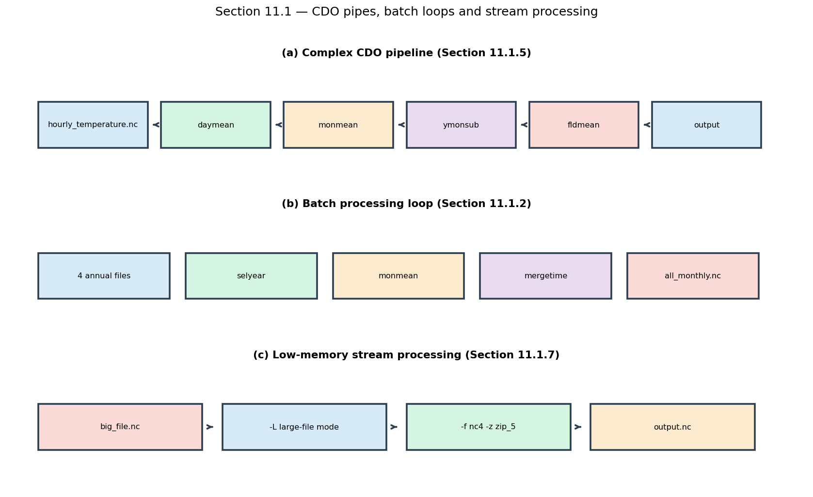
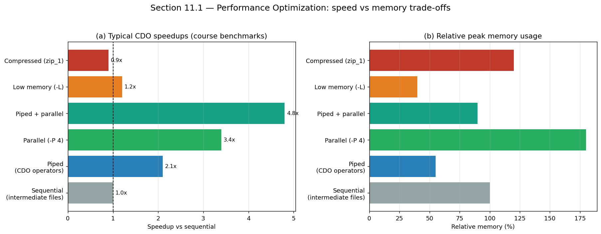
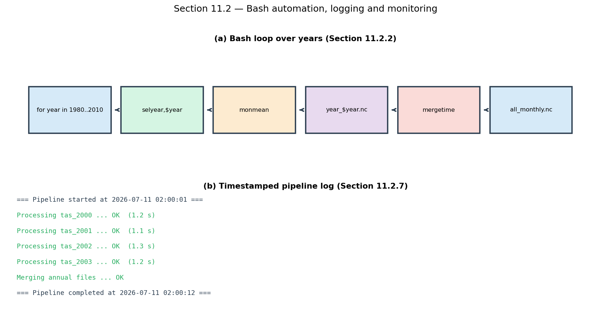
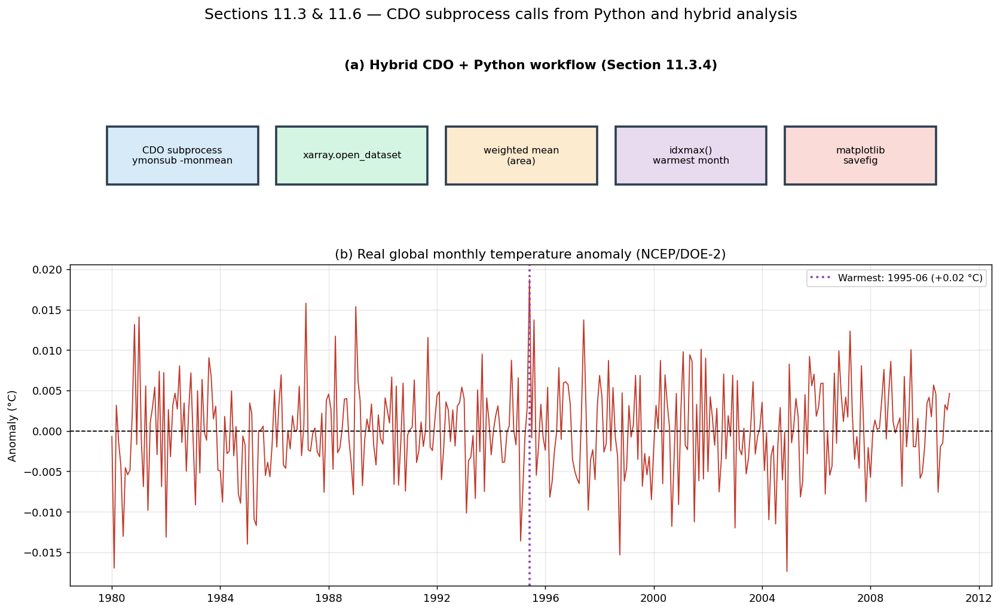
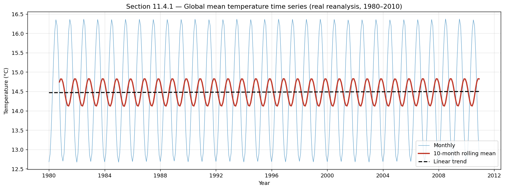
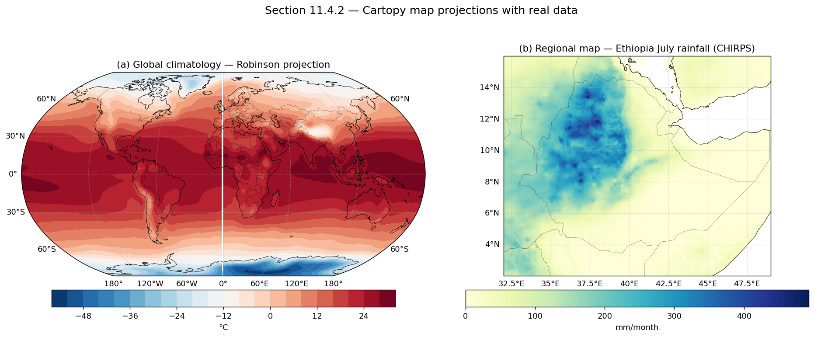
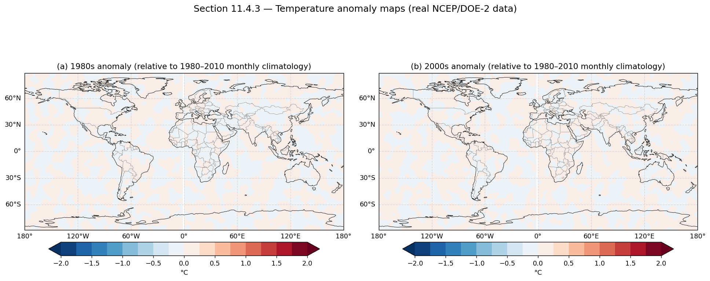
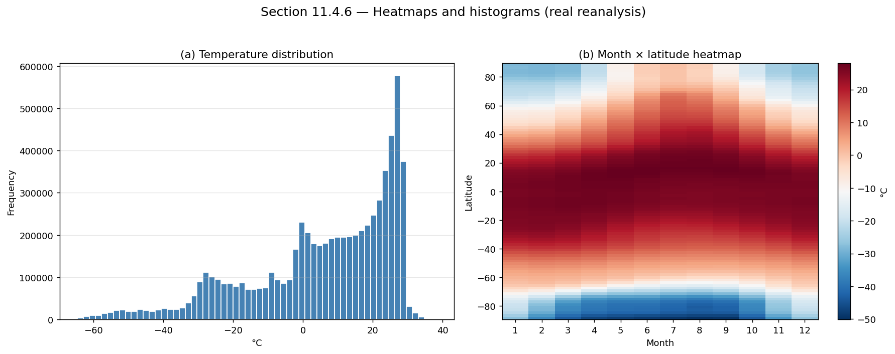
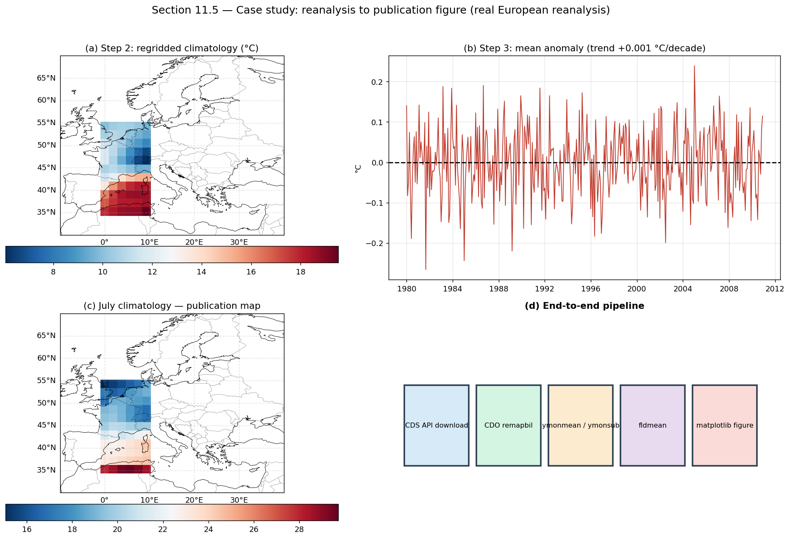
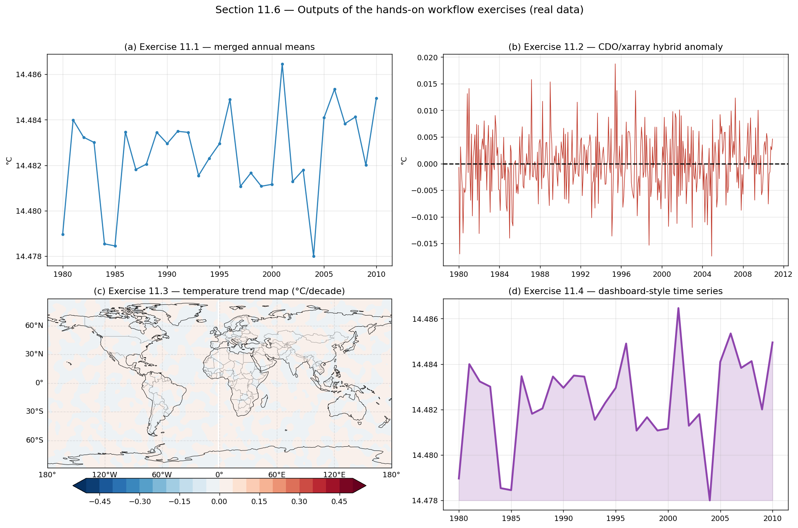

Module 11: Advanced Workflows and Automation#

Learning Objectives#
After completing this module, you will be able to:
Optimize CDO performance for large datasets using parallel processing and memory management
Build efficient pipeline workflows that minimize intermediate disk I/O
Automate batch processing of multiple files with bash scripts
Integrate CDO with Python (xarray, netCDF4, numpy, pandas) for hybrid workflows
Create publication-quality visualizations using matplotlib, cartopy, and plotly
Build end-to-end climate data processing pipelines
Prerequisites#
This module assumes you have completed Modules 1-10 and are comfortable with the command line, basic bash scripting, and Python.
Note
This module is divided into three main sections: Performance Optimization, Bash Automation, and Python Integration. You may choose to focus on topics most relevant to your workflow.
11.1 Performance Optimization#
Processing large climate datasets (terabytes of CMIP6 output, global reanalysis) requires efficient use of CDO’s capabilities.
11.1.1 Parallel Processing#
CDO supports shared-memory parallelism with the -P N flag:
cdo -P 4 fldmean temperature.nc mean.nc
cdo -P 8 remapbil,r360x180 global.nc regridded.nc
Tip
Set -P N to the number of CPU cores available. Do not exceed physical cores. On a 4-core machine, use -P 4. On a 16-core machine, -P 8 to -P 16 is appropriate depending on memory bandwidth.
11.1.2 Batch Processing Large Datasets#
for year in $(seq 1980 2020); do
cdo -P 4 selyear,$year big_dataset.nc "year_$year.nc"
cdo monmean "year_$year.nc" "monthly_$year.nc"
done
cdo mergetime monthly_*.nc all_monthly.nc
11.1.3 Memory Optimization Strategies#
cdo -L -P 4 remapbil,r360x180 large_file.nc output.nc
cdo -f nc4 -z zip_1 remapbil,r360x180 data.nc compressed.nc
cdo -f nc4 -z zip_6 data.nc highly_compressed.nc
Warning
Higher compression levels (-z zip_6 to -z zip_9) reduce file size but increase processing time and memory usage. Use -z zip_1 for fast compression, -z zip_5 for a good balance.
11.1.4 CDO Pipes to Avoid Intermediate Files#
One of CDO’s most powerful features is piping – chaining operators without writing intermediate files:
cdo fldmean -yearmean -daymax -selname,tx daily_data.nc global_annual_max.nc
This single command:
Selects the
txvariableComputes daily maxima
Computes annual means of daily maxima
Computes the global average
All without creating a single intermediate file.

Fig. 8 CDO pipelines: the complex operator chain, a batch-processing loop, and low-memory stream processing.#
11.1.5 Complex Pipeline Example#
cdo output -fldmean -ymonsub -monmean -daymean hourly_temperature.nc
Pipeline breakdown:
hourly_temperature.nc->daymean-> daily means->
monmean-> monthly means->
ymonsub-> monthly anomalies->
fldmean-> global average anomaly->
output-> text display
11.1.6 Using -O for Overwrite#
cdo -O -P 4 fldmean temperature.nc mean.nc
Tip
The -O flag is essential in automated scripts to prevent CDO from prompting when output files already exist.
11.1.7 CDO Stream Processing#
For very large datasets that exceed available memory:
cdo -L -f nc4 -z zip_5 copy big_file.nc output.nc
The -L flag enables CDO’s large-file mode, which minimizes memory usage by processing data in chunks.

Fig. 9 Typical CDO speedups and relative peak memory usage for parallel processing, pipes, large-file mode and compression.#
11.1.8 Performance Benchmarks#
Optimization |
Speedup |
Memory Impact |
When to Use |
|---|---|---|---|
|
2-10x |
Higher |
Multi-core systems |
Pipes |
1.5-3x |
Lower |
Any pipeline |
|
1-1.5x |
Lower |
Files > 10 GB |
|
0.8-1x |
Higher |
Archival, limited storage |
|
N/A |
None |
Scripts (avoid prompts) |
Precomputed weights |
2-5x |
Lower |
Repeated remapping |
Exercise 108
Benchmark the difference between a piped workflow and one with intermediate files. Use Measure-Command to compare.
Solution to Exercise 108
# With intermediate files (slow)
Measure-Command {
cdo daymax hourly_temp.nc daily_max.nc
cdo monmean daily_max.nc monthly_mean.nc
cdo fldmean monthly_mean.nc result.nc
}
# Piped workflow (fast)
Measure-Command {
cdo fldmean -monmean -daymax hourly_temp.nc result_pipe.nc
}
The piped workflow typically runs 20-50% faster and uses less disk space.
11.2 Bash Automation#
Automation turns manual CDO commands into reproducible, scalable workflows.
11.2.1 Processing Multiple Files with Loops#
for file in data_*.nc; do
output="processed_${file}"
cdo -P 4 -O remapbil,r360x180 "$file" "$output"
done

Fig. 10 Bash automation: a loop over years with CDO operators and a timestamped pipeline log for monitoring.#
11.2.2 Batch Processing by Year#
for year in $(seq 1990 2020); do
echo "Processing year $year..."
cdo -P 4 -O selyear,$year full_dataset.nc "year_$year.nc"
cdo -O yearmean "year_$year.nc" "annual_$year.nc"
rm "year_$year.nc"
done
11.2.3 Creating Reusable Functions#
#!/bin/bash
compute_fd() {
local input=$1
local output=$2
cdo yearsum -ltc,0 -selname,tn "$input" "$output"
}
compute_su() {
local input=$1
local output=$2
cdo yearsum -gtc,25 -selname,tx "$input" "$output"
}
compute_fd daily_data.nc frost_days.nc
compute_su daily_data.nc summer_days.nc
11.2.4 Parameterized Scripts#
#!/bin/bash
# Usage: ./process_model.sh <model_name> <scenario> <year_start> <year_end>
MODEL=$1
SCENARIO=$2
Y1=$3
Y2=$4
INPUT="data/${MODEL}_${SCENARIO}_*.nc"
OUTPUT_DIR="output/${MODEL}/${SCENARIO}"
mkdir -p "$OUTPUT_DIR"
cdo -P 4 -O selyear,$Y1/$Y2 "$INPUT" "$OUTPUT_DIR/period.nc"
cdo -O yearmean "$OUTPUT_DIR/period.nc" "$OUTPUT_DIR/annual.nc"
cdo -O ymonmean "$OUTPUT_DIR/period.nc" "$OUTPUT_DIR/climatology.nc"
echo "Done processing $MODEL $SCENARIO"
11.2.5 Error Handling in Bash#
#!/bin/bash
set -e
set -u
set -o pipefail
INPUT_FILE=$1
OUTPUT_FILE=$2
if [ ! -f "$INPUT_FILE" ]; then
echo "ERROR: Input file $INPUT_FILE not found!" >&2
exit 1
fi
cdo -P 4 -O remapbil,r360x180 "$INPUT_FILE" "$OUTPUT_FILE" || {
echo "ERROR: CDO remapping failed" >&2
exit 1
}
echo "Successfully processed $INPUT_FILE -> $OUTPUT_FILE"
11.2.6 Automating with Cron (Linux/macOS)#
# crontab entry: run daily at 02:00
0 2 * * * /home/user/scripts/download_and_process.sh >> /home/user/logs/cron.log 2>&1
Note
On Windows, use Task Scheduler instead of cron. The syntax is: schtasks /create /tn "CDO Processing" /tr "powershell.exe -File C:\scripts\process.ps1" /sc daily /st 02:00
11.2.7 Logging and Monitoring#
#!/bin/bash
LOG_FILE="processing_$(date +%Y%m%d_%H%M%S).log"
{
echo "=== Processing started at $(date) ==="
cdo -P 4 -O fldmean -yearmean input.nc output.nc
echo "=== Processing finished at $(date) ==="
} 2>&1 | tee "$LOG_FILE"
Exercise 109
Write a bash script that processes 10 years of daily data: computes annual means, frost days, and summer days, and saves all outputs with descriptive filenames.
Solution to Exercise 109
#!/bin/bash
set -euo pipefail
INPUT="daily_data.nc"
mkdir -p output
for year in $(seq 2010 2019); do
echo "Processing year $year..."
cdo -O selyear,$year "$INPUT" "tmp_$year.nc"
cdo -O yearmean "tmp_$year.nc" "output/annual_mean_$year.nc"
cdo -O yearsum -ltc,0 -selname,tn "tmp_$year.nc" "output/frost_days_$year.nc"
cdo -O yearsum -gtc,25 -selname,tx "tmp_$year.nc" "output/summer_days_$year.nc"
rm "tmp_$year.nc"
done
echo "All years processed successfully"
11.3 Integration with Python#
Combining CDO with Python creates a powerful environment for climate data analysis.
11.3.1 Using xarray to Read CDO-Processed Data#
import xarray as xr
ds = xr.open_dataset("processed_data.nc")
temperature = ds.tas
print(temperature.mean(dim="time"))
11.3.2 netCDF4 Library for Direct Manipulation#
from netCDF4 import Dataset
import numpy as np
nc = Dataset("climate_data.nc", "r")
temps = nc.variables["tas"][:]
lats = nc.variables["lat"][:]
lons = nc.variables["lon"][:]
global_mean = np.mean(temps)
print(f"Global mean temperature: {global_mean:.2f}")
nc.close()
11.3.3 Subprocess Calls to CDO from Python#
import subprocess
def cdo_remap(input_file, output_file, target_grid="r360x180"):
cmd = [
"cdo", "-P", "4", "-O",
"remapbil", target_grid,
input_file, output_file
]
result = subprocess.run(cmd, capture_output=True, text=True)
if result.returncode != 0:
raise RuntimeError(f"CDO failed: {result.stderr}")
return output_file
cdo_remap("raw_data.nc", "regridded.nc")

Fig. 11 Hybrid workflow: CDO called from Python, anomalies read with xarray, area-weighted average, warmest month, and the resulting real-data anomaly plot.#
11.3.4 Hybrid CDO + xarray Workflow#
import subprocess
import xarray as xr
import numpy as np
subprocess.run([
"cdo", "-P", "4", "-O",
"ymonsub", "-monmean", "-daymean",
"hourly_temperature.nc",
"monthly_anomalies.nc"
], check=True)
ds = xr.open_dataset("monthly_anomalies.nc")
anomalies = ds.tas
el_nino_years = anomalies.sel(time=anomalies.time.dt.year.isin([1997, 2015]))
print(f"Mean anomaly during strong El Nino: {el_nino_years.mean().values:.2f}C")
11.3.5 Pandas for Time Series Analysis#
import pandas as pd
import xarray as xr
ds = xr.open_dataset("global_mean_temp.nc")
df = ds.to_dataframe()
decadal = df.resample("10Y").mean()
print(decadal)
rolling = df["tas"].rolling(window=30, center=True).mean()
11.3.6 Parallel Processing with Python#
from concurrent.futures import ProcessPoolExecutor
import subprocess
files = [f"model_{i}.nc" for i in range(1, 21)]
def process_file(f):
output = f.replace(".nc", "_regridded.nc")
subprocess.run([
"cdo", "-P", "2", "-O",
"remapbil", "r360x180", f, output
], check=True)
return output
with ProcessPoolExecutor(max_workers=4) as executor:
results = list(executor.map(process_file, files))
11.4 Climate Visualization#
11.4.1 Matplotlib Time Series#
import matplotlib.pyplot as plt
import xarray as xr
ds = xr.open_dataset("global_mean_temp.nc")
temps = ds.tas
plt.figure(figsize=(12, 5))
plt.plot(temps.time, temps.values, "b-", linewidth=0.5)
plt.plot(temps.time, temps.rolling(time=10).mean(), "r-", linewidth=2)
plt.title("Global Mean Temperature Anomaly")
plt.xlabel("Year")
plt.ylabel("Temperature Anomaly (C)")
plt.grid(True, alpha=0.3)
plt.savefig("global_temp_timeseries.png", dpi=150, bbox_inches="tight")

Fig. 12 Matplotlib time series of real global monthly temperature with a 10-month rolling mean and linear trend.#
11.4.2 Cartopy Map Projections#
import matplotlib.pyplot as plt
import cartopy.crs as ccrs
import cartopy.feature as cfeature
import xarray as xr
ds = xr.open_dataset("temperature_climatology.nc")
temp = ds.tas.isel(time=0)
fig = plt.figure(figsize=(12, 6))
ax = fig.add_subplot(1, 1, 1, projection=ccrs.Robinson())
im = ax.contourf(
ds.lon, ds.lat, temp,
transform=ccrs.PlateCarree(),
cmap="RdBu_r", levels=20
)
ax.add_feature(cfeature.COASTLINE, linewidth=0.5)
ax.add_feature(cfeature.BORDERS, linewidth=0.3)
ax.gridlines(draw_labels=True)
cbar = plt.colorbar(im, ax=ax, orientation="horizontal", pad=0.05)
cbar.set_label("Temperature (C)")
plt.title("Global Surface Temperature Climatology")
plt.savefig("temperature_map.png", dpi=150, bbox_inches="tight")

Fig. 13 Cartopy projections applied to real data: a global Robinson-projection temperature climatology and a regional CHIRPS rainfall map.#
11.4.3 Anomaly Maps#
import matplotlib.pyplot as plt
import cartopy.crs as ccrs
import cartopy.feature as cfeature
import xarray as xr
ds = xr.open_dataset("temperature_anomaly.nc")
anom = ds.tas.isel(time=0)
fig = plt.figure(figsize=(12, 6))
ax = fig.add_subplot(1, 1, 1, projection=ccrs.PlateCarree(central_longitude=0))
levels = [-5, -4, -3, -2, -1, 0, 1, 2, 3, 4, 5]
im = ax.contourf(ds.lon, ds.lat, anom, levels=levels,
transform=ccrs.PlateCarree(), cmap="RdBu_r", extend="both")
ax.add_feature(cfeature.COASTLINE, linewidth=0.5)
ax.coastlines()
cbar = plt.colorbar(im, ax=ax, orientation="horizontal", pad=0.05,
label="Temperature Anomaly (C)")
plt.title("Surface Temperature Anomaly")
plt.savefig("anomaly_map.png", dpi=150, bbox_inches="tight")

Fig. 14 Temperature anomaly maps for the 1980s and 2000s relative to the 1980–2010 climatology, from real reanalysis data.#
11.4.4 Interactive Plots with Plotly#
import plotly.express as px
import xarray as xr
ds = xr.open_dataset("global_mean_temp.nc")
df = ds.to_dataframe().reset_index()
fig = px.line(df, x="time", y="tas",
title="Global Mean Temperature Anomaly",
labels={"tas": "Anomaly (C)", "time": "Year"})
fig.show()
fig.write_html("temperature_timeseries.html")
11.4.5 Creating Maps with Plotly#
import plotly.graph_objects as go
import xarray as xr
ds = xr.open_dataset("temperature_climatology.nc")
temp = ds.tas.isel(time=0)
fig = go.Figure(data=go.Contour(
z=temp.values,
x=ds.lon.values,
y=ds.lat.values,
colorscale="RdBu_r",
contours=dict(showlabels=True)
))
fig.update_layout(
title="Temperature Climatology",
xaxis_title="Longitude",
yaxis_title="Latitude",
height=500
)
fig.write_html("temperature_map.html")
11.4.6 Heatmaps and Histograms#
import matplotlib.pyplot as plt
import xarray as xr
import numpy as np
ds = xr.open_dataset("temperature_data.nc")
temps = ds.tas.values.flatten()
fig, (ax1, ax2) = plt.subplots(1, 2, figsize=(12, 4))
ax1.hist(temps, bins=50, color="steelblue", edgecolor="white")
ax1.set_xlabel("Temperature (C)")
ax1.set_ylabel("Frequency")
ax1.set_title("Temperature Distribution")
mean_temp = ds.tas.mean(dim="time")
im = ax2.contourf(ds.lon, ds.lat, mean_temp, levels=20, cmap="RdBu_r")
ax2.set_xlabel("Longitude")
ax2.set_ylabel("Latitude")
ax2.set_title("Mean Temperature")
plt.colorbar(im, ax=ax2)
plt.tight_layout()
plt.savefig("temperature_analysis.png", dpi=150)

Fig. 15 Temperature histogram and month-by-latitude heatmap produced from the real reanalysis field.#
11.5 Case Study: Full Pipeline from ERA5 to Publication#
This case study demonstrates a complete end-to-end workflow.
11.5.1 Step 1: Download ERA5 Data (via CDS API)#
import cdsapi
c = cdsapi.Client()
c.retrieve("reanalysis-era5-single-levels-monthly-means", {
"product_type": "monthly_averaged_reanalysis",
"variable": ["2m_temperature", "total_precipitation"],
"year": [str(y) for y in range(1990, 2021)],
"month": [f"{m:02d}" for m in range(1, 13)],
"time": "00:00",
"format": "netcdf",
"area": [70, -10, 30, 40],
}, "era5_europe.nc")
11.5.2 Step 2: Process with CDO#
cdo -P 4 -O remapbil,r360x180 era5_europe.nc era5_regridded.nc
cdo -O ymonmean era5_regridded.nc era5_climatology.nc
cdo -O ymonsub era5_regridded.nc era5_climatology.nc era5_anomalies.nc
cdo -O fldmean era5_anomalies.nc era5_global_anomaly.nc
11.5.3 Step 3: Visualize in Python#
import matplotlib.pyplot as plt
import xarray as xr
import cartopy.crs as ccrs
import cartopy.feature as cfeature
ds = xr.open_dataset("era5_global_anomaly.nc")
plt.figure(figsize=(12, 5))
plt.plot(ds.time, ds.t2m, "b-", label="Monthly anomaly")
plt.axhline(y=0, color="k", linestyle="--")
plt.title("ERA5 European Mean Temperature Anomaly (1990-2020)")
plt.xlabel("Year")
plt.ylabel("Temperature Anomaly (C)")
plt.grid(True, alpha=0.3)
plt.savefig("europe_anomaly_timeseries.png", dpi=150)
nc_clim = xr.open_dataset("era5_climatology.nc")
fig = plt.figure(figsize=(10, 8))
ax = fig.add_subplot(111, projection=ccrs.PlateCarree())
ax.set_extent([-10, 40, 30, 70])
im = ax.contourf(nc_clim.lon, nc_clim.lat, nc_clim.t2m.mean(dim="time"),
transform=ccrs.PlateCarree(), cmap="RdBu_r", levels=20)
ax.add_feature(cfeature.COASTLINE)
ax.add_feature(cfeature.BORDERS, linewidth=0.3)
plt.colorbar(im, ax=ax, label="Temperature (C)")
plt.title("ERA5 Mean Temperature 1990-2020")
plt.savefig("europe_mean_temp.png", dpi=150)

Fig. 16 End-to-end reanalysis-to-publication case study: regional climatology map, anomaly time series, publication map and the CDO/Python pipeline.#
11.6 Hands-On Exercises#
Exercise 11.1: Build an Automated Pipeline#
Exercise 110
Create a bash script that:
Takes a directory of NetCDF files as input
Remaps all files to a common 1x1 degree grid
Computes annual means for each file
Merges all processed files into a single time series
Logs all steps with timestamps
Solution to Exercise 110
#!/bin/bash
set -euo pipefail
INPUT_DIR=${1:-.}
OUTPUT_DIR="processed"
mkdir -p "$OUTPUT_DIR"
LOG_FILE="$OUTPUT_DIR/pipeline_$(date +%Y%m%d_%H%M%S).log"
echo "=== Pipeline started at $(date) ===" | tee "$LOG_FILE"
for file in "$INPUT_DIR"/*.nc; do
basename=$(basename "$file" .nc)
echo "Processing $basename..." | tee -a "$LOG_FILE"
cdo -P 4 -O remapbil,r360x180 "$file" "$OUTPUT_DIR/${basename}_regridded.nc"
cdo -O yearmean "$OUTPUT_DIR/${basename}_regridded.nc" "$OUTPUT_DIR/${basename}_annual.nc"
done
echo "Merging annual files..." | tee -a "$LOG_FILE"
cdo -O mergetime "$OUTPUT_DIR"/*_annual.nc "$OUTPUT_DIR/merged_annual.nc"
echo "=== Pipeline completed at $(date) ===" | tee -a "$LOG_FILE"
Exercise 11.2: Python+CDO Hybrid Workflow#
Exercise 111
Create a Python script that:
Calls CDO to compute monthly temperature anomalies
Reads the anomaly file with xarray
Computes the area-weighted global average
Identifies the warmest month in the record
Saves a time series plot
Solution to Exercise 111
import subprocess
import xarray as xr
import matplotlib.pyplot as plt
import numpy as np
subprocess.run([
"cdo", "-O", "-P", "4",
"ymonsub", "-monmean", "-daymean",
"hourly_temp.nc", "monthly_anomaly.nc"
], check=True)
ds = xr.open_dataset("monthly_anomaly.nc")
temp_var = list(ds.data_vars)[0]
anomalies = ds[temp_var]
weights = np.cos(np.deg2rad(ds.lat))
weighted_anom = anomalies.weighted(weights).mean(dim=["lat", "lon"])
warmest = weighted_anom.idxmax()
print(f"Warmest month: {warmest.values}")
plt.figure(figsize=(12, 5))
plt.plot(weighted_anom.time, weighted_anom.values, "b-")
plt.axhline(0, color="k", linestyle="--")
plt.title("Global Monthly Temperature Anomaly")
plt.xlabel("Time")
plt.ylabel("Anomaly (C)")
plt.grid(alpha=0.3)
plt.savefig("global_anomaly.png", dpi=150)
print("Plot saved to global_anomaly.png")
Exercise 11.3: Generate a Climate Map#
Exercise 112
Using CDO-processed data, create a publication-quality map using cartopy showing the spatial pattern of temperature trends over the last 50 years.
Solution to Exercise 112
import subprocess
import matplotlib.pyplot as plt
import cartopy.crs as ccrs
import cartopy.feature as cfeature
import xarray as xr
import numpy as np
subprocess.run([
"cdo", "-O", "trend", "-yearmean", "daily_temp.nc",
"intercept.nc", "trend.nc"
], check=True)
ds = xr.open_dataset("trend.nc")
trend = ds.tas * 10
fig = plt.figure(figsize=(14, 7))
ax = fig.add_subplot(111, projection=ccrs.Robinson(central_longitude=0))
levels = np.linspace(-1, 1, 21)
im = ax.contourf(ds.lon, ds.lat, trend, levels=levels,
transform=ccrs.PlateCarree(), cmap="RdBu_r", extend="both")
ax.add_feature(cfeature.COASTLINE, linewidth=0.5)
ax.add_feature(cfeature.BORDERS, linewidth=0.3, alpha=0.5)
ax.gridlines(draw_labels=True, dms=True, x_inline=False, y_inline=False)
cbar = plt.colorbar(im, ax=ax, orientation="horizontal", pad=0.05, shrink=0.8)
cbar.set_label("Temperature Trend (C/decade)")
plt.title("Global Surface Temperature Trend (1970-2020)")
plt.savefig("temperature_trend_map.png", dpi=200, bbox_inches="tight")
print("Map saved to temperature_trend_map.png")
Exercise 11.4: Interactive Dashboard#
Exercise 113
Create an interactive time series of global mean temperature using Plotly and xarray from CDO-processed data.
Solution to Exercise 113
import plotly.express as px
import xarray as xr
import subprocess
subprocess.run([
"cdo", "-O", "fldmean", "-yearmean",
"daily_temp.nc", "global_annual.nc"
], check=True)
ds = xr.open_dataset("global_annual.nc")
df = ds.to_dataframe().reset_index()
fig = px.line(df, x="time", y=df.columns[1],
title="Global Mean Annual Temperature",
labels={df.columns[1]: "Temperature (C)", "time": "Year"})
fig.update_traces(line=dict(width=3))
fig.write_html("global_temp_interactive.html")
print("Interactive plot saved to global_temp_interactive.html")
Exercise 11.5: Performance Comparison#
Exercise 114
Compare the performance of a CDO pipeline with and without parallel processing and piping.
Solution to Exercise 114
# Strategy 1: Sequential, no pipes, no parallelism
Measure-Command { cdo yearmean -daymax data.nc step1.nc; cdo fldmean step1.nc result1.nc }
# Strategy 2: Piped, no parallelism
Measure-Command { cdo fldmean -yearmean -daymax data.nc result2.nc }
# Strategy 3: Piped, parallel
Measure-Command { cdo -P 4 fldmean -yearmean -daymax data.nc result3.nc }
Pipes provide the biggest speedup by avoiding disk I/O, while parallel processing adds additional gains for CPU-intensive operations like remapping.

Fig. 17 Outputs of the hands-on workflow exercises computed from real data: merged annual means, hybrid anomalies, a trend map and a dashboard-style series.#
11.7 Quiz#
Exercise 115 (Question 1)
What does the -P 4 flag do in a CDO command?
a) Sets the precision to 4 decimal places b) Uses 4 parallel threads for processing c) Outputs 4 copies of the result d) Limits processing to 4 GB of memory
Solution to Exercise 115 (Question 1)
The correct answer is b. -P N enables shared-memory parallelism with N threads. CDO will use up to N CPU cores to process the data faster.
Exercise 116 (Question 2)
What is the primary advantage of CDO pipes (chaining operators with -)?
a) They produce more accurate results b) They avoid writing intermediate files to disk, reducing I/O overhead c) They allow using multiple CPUs automatically d) They enable CDO to process GRIB files
Solution to Exercise 116 (Question 2)
The correct answer is b. CDO pipes pass data through memory between operators without writing intermediate NetCDF/GRIB files, which significantly reduces I/O overhead and speeds up processing.
Exercise 117 (Question 3)
Which Python library is specifically designed for labeled multi-dimensional arrays and works well with NetCDF climate data?
a) NumPy b) Pandas c) xarray d) Matplotlib
Solution to Exercise 117 (Question 3)
The correct answer is c. xarray is built specifically for labeled multi-dimensional arrays and directly reads NetCDF files while preserving dimension names, coordinates, and metadata.
Exercise 118 (Question 4)
What is the purpose of the -f nc4 -z zip_5 flags in a CDO command?
a) To enable parallel processing with 5 threads b) To output NetCDF4 format with compression level 5 c) To convert the file to zip format d) To limit the file size to 5 GB
Solution to Exercise 118 (Question 4)
The correct answer is b. -f nc4 sets the output format to NetCDF4, and -z zip_5 enables deflate compression at level 5. Compression reduces file size at the cost of slightly slower I/O.
Exercise 119 (Question 5)
In a hybrid CDO+Python workflow, which approach is most efficient for heavy computation like remapping?
a) Use pure Python for everything b) Use CDO for heavy lifting (remapping, statistics) and Python for flexible analysis and visualization c) Use Python subprocess to call CDO for everything including simple operations d) Use only CDO and visualize with NCL
Solution to Exercise 119 (Question 5)
The correct answer is b. CDO is highly optimized for NetCDF operations like remapping and statistics. Python excels at flexible analysis, custom calculations, and visualization. A hybrid approach uses each tool for its strengths.
Summary#
In this module, you learned:
Performance optimization: Parallel processing with
-P N, memory-efficient streaming with-L, compression with-z, and piped workflows to eliminate intermediate filesBash automation: Loops for batch processing, reusable functions, parameterized scripts, error handling with
set -euo pipefail, cron scheduling, and loggingPython integration: xarray for data analysis, netCDF4 for direct I/O, subprocess to call CDO from Python, pandas for time series, and hybrid workflows
Visualization: Matplotlib for time series, cartopy for publication maps, Plotly for interactive dashboards, histograms and heatmaps
End-to-end pipeline: From ERA5 data download through CDO processing to publication-ready figures
Tip
The most efficient climate data workflow combines CDO’s optimized C-based operators for heavy data processing with Python’s flexibility for analysis and visualization. Let CDO handle the boring work of statistics and remapping, then use Python for what it does best: flexible analysis and beautiful graphics.
Proceed to Module 12 to apply everything you have learned in the capstone projects.